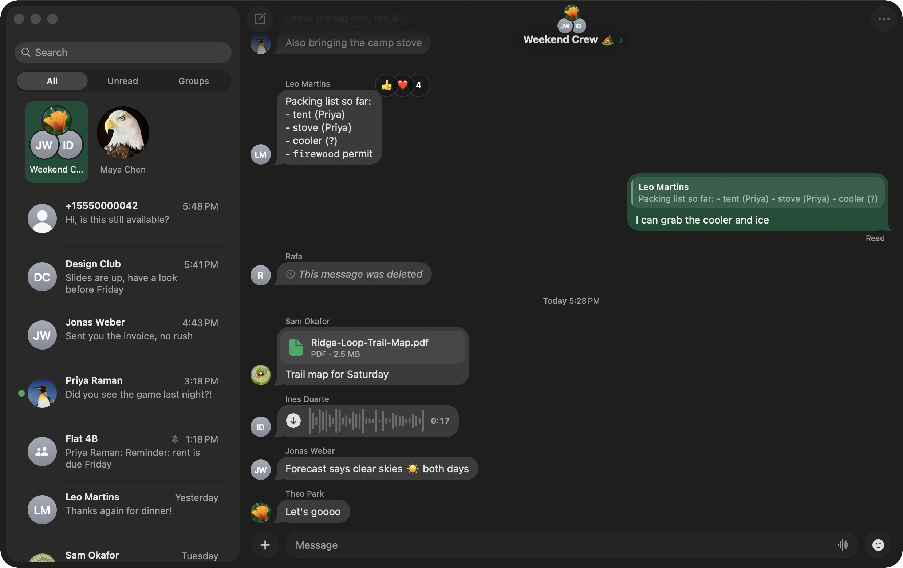

Backchannel opens straight to your chats, scrolls through years of history without a stutter, and looks like it came with your Mac.

Your messages live in a database on your Mac, and the app reads it directly. There's no web page in between, so a cold launch lands on the chat list and switching chats is instant.
Written in AppKit, with Liquid Glass, your accent colour and natural motion. The sidebar folds into a compact column like Messages, and each chat can have its own theme.
Replies, reactions, polls, events, voice messages, stickers, GIFs, photos, files and read receipts. Calls aren't supported.
Your phone stays your main device. Backchannel shows up there as a linked device, and your history comes across in the background.
It isn't made by WhatsApp or Meta. It uses the same multi-device protocol as WhatsApp Web and never sends in bulk, but WhatsApp can restrict accounts it believes use unofficial apps, so the risk isn't zero.